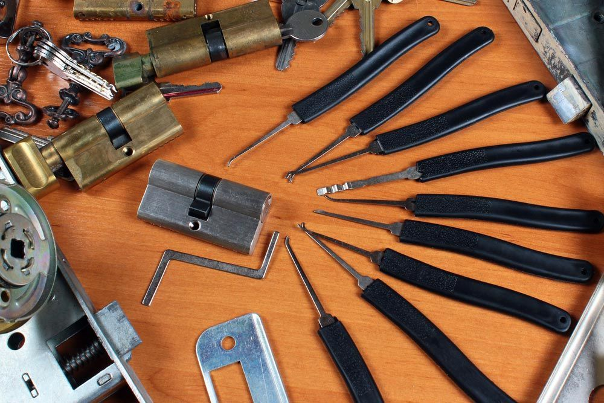
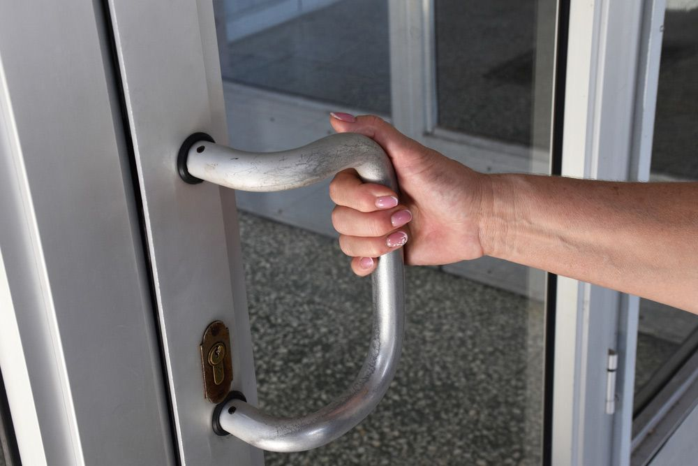

Get A Free Quote Now!
Thank you for contacting SPL Security Solutions.
We will be in touch soon.

Home, Car & Business Security Solutions
Our state-of-the-art locksmith services in Southport provide unbeatable security and peace of mind for residents and business owners alike. From advanced key cutting services to the installation of sophisticated lock systems, our solutions are custom designed to address a wide spectrum of security challenges. Whether you require enhanced protection for your residence or you're looking to secure commercial premises against unauthorised entry, SPL Security Solutions is at your service.
Leveraging the latest technology and drawing upon years of industry experience, our team is committed to offering security strategies that are both effective and adaptable to individual needs. In a world where the security landscape is constantly evolving, having a reliable locksmith can make all the difference.
For more information on our comprehensive range of locksmith services, call (07) 5588 8111.
Southport residents can count on our comprehensive residential locksmith services for an unmatched sense of security. Whether it's upgrading your locks, performing essential repairs or rekeying, we handle it all. Our key duplication service ensures you always have a spare on hand and our emergency lockout assistance is just a call away when you don't.
Our commercial locksmith services are designed to provide the most appropriate level of protection for properties in Southport. We undertake comprehensive security assessments, installing high-security locks, master key systems and access control solutions as required. In the event of an emergency lockout or break-in, our team is also ready to assist, 24/7.
Having car key trouble? Our automotive locksmith services cater to Southport drivers who need fast and reliable solutions for lockouts, key replacements and more. Whether you've lost your keys, damaged them or are experiencing a malfunction, we have the expertise to help. We also provide transponder key programming and ignition repair or replacement services, available 24/7 in case of emergencies.
Our Southport clients benefit from restricted key systems that offer superior security by preventing unauthorised duplication of keys. These systems are designed to provide controlled access to different areas, enabling a high level of management over who enters sensitive locations. Ideal for businesses looking to safeguard their assets, our solutions offer peace of mind through enhanced security measures.
Take advantage of our extensive range of safes, designed to meet various security requirements for Southport clients. Whether you're looking to protect personal valuables or secure sensitive business documents, our services include everything from delivery and installation to repair and emergency unlocking. Each safe is selected for its durability and resilience against theft, fire and in some instances, flood damage.
In Southport, we design security systems that offer the latest in surveillance and monitoring technology. Our solutions include CCTV cameras, alarm systems, access control and intercoms for complete coverage of your property. We work with you to create a tailored system that meets your specific security needs and budget.
Our lock hardware in Southport is ideal for homes and businesses needing extra security. From traditional locks to advanced keyless systems, we offer durable solutions tailored to your needs.
Our door hardware in Southport includes sturdy hinges, modern door handles and high-performance closers. These products ensure seamless functionality and enhanced security for all property types.
Our high-quality architectural hardware collection includes fire-rated fixtures, effortless door closers, and decorative handles designed to complement modern and classic styles in Southport.
24/7 Emergency Locksmith Services
SPL Security Solutions offers around the clock emergency locksmith services in the Southport area. Whether you're locked out of your car, home or business, we can help you regain access quickly. Our team has years of experience dealing with various lock-related emergencies, providing peace of mind when you need it most.
We also offer security assessments after a break-in to ensure your property is re-secured. Our team can provide on the spot key cutting services and lock replacements to avoid recurrence. Contact our team any time, day or night, for all your lock-related emergencies.

Contact Details
24/7 Emergency Locksmiths or Security Tech


Trading Hours
Retail Shop

Frequently Asked Questions
-
What is a master key system?
A master key system is a hierarchy of keys and a number of locks that allow different groups or individual key holders to access all or specifically designated areas of a building. At its simplest, a master key can open many locks, each of which can also be opened by their own unique key.
-
Can installing a deadbolt lock increase my home security?
Yes, installing a deadbolt can significantly enhance your home security. Deadbolts are stronger and provide more resistance to forced entry than standard spring latch locks. Ensure the deadbolt is properly installed and meets the standards for residential security.
Locksmith & Security Solutions Gold Coast, Brisbane & Northern NSW